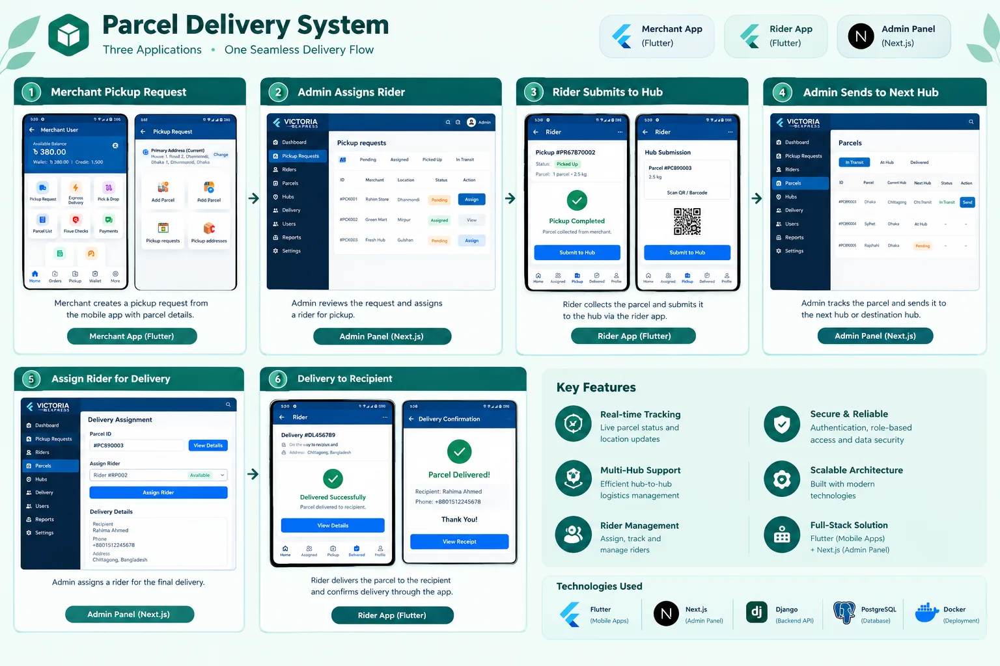
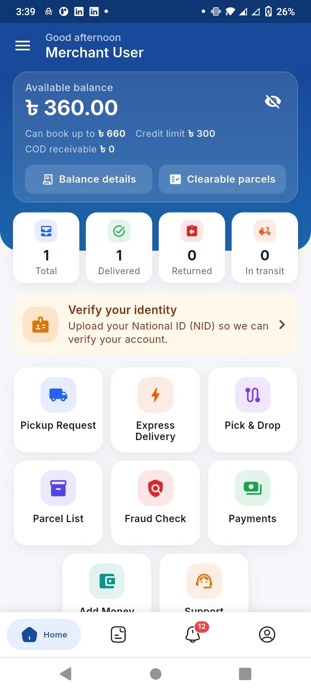
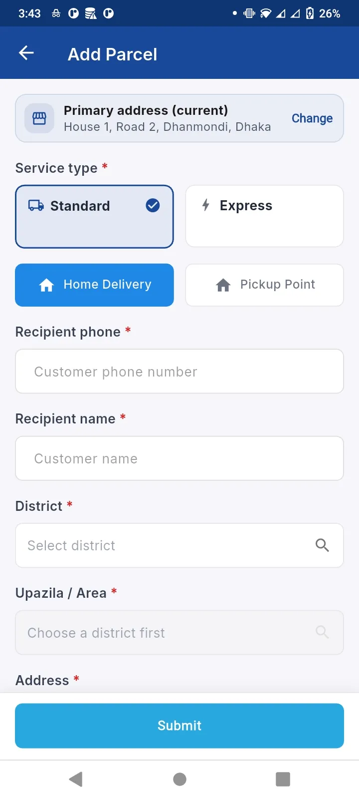
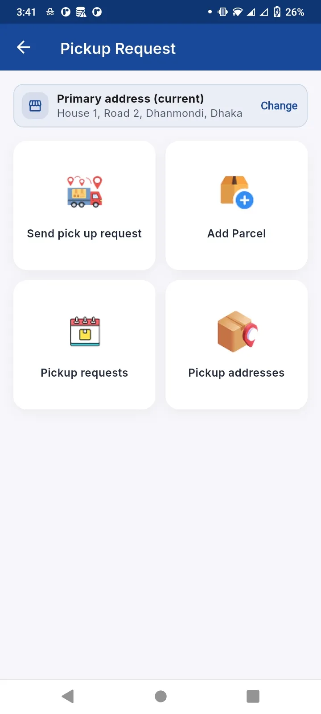
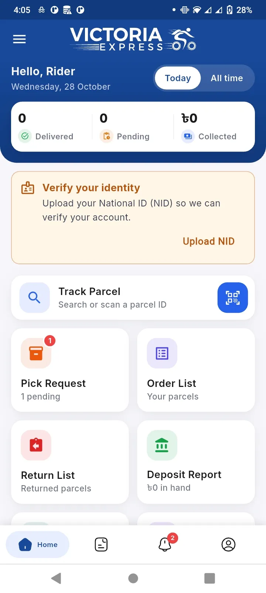
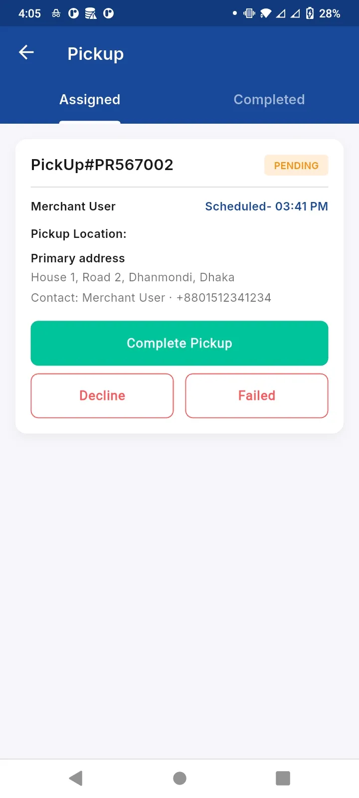
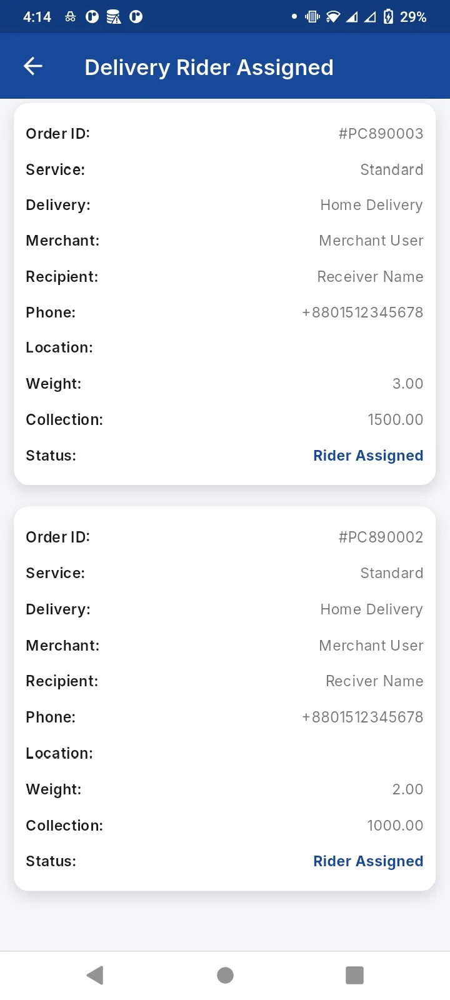
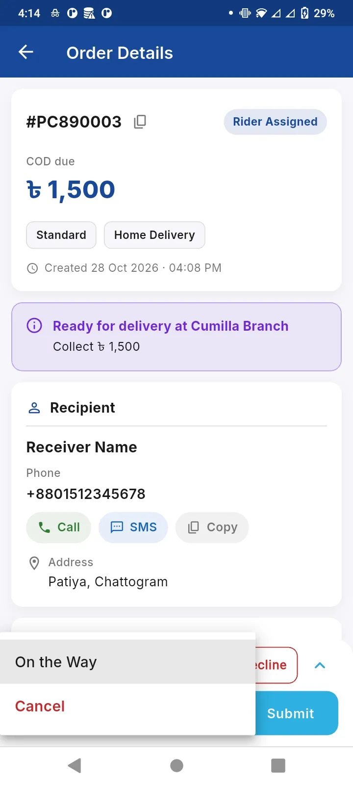
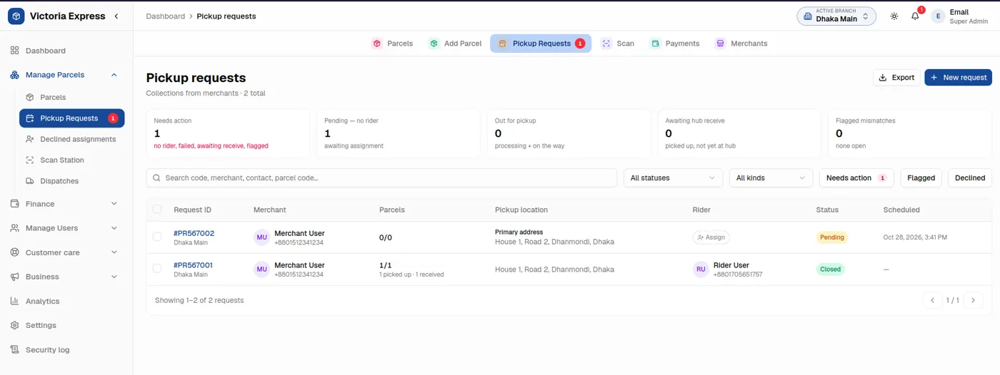
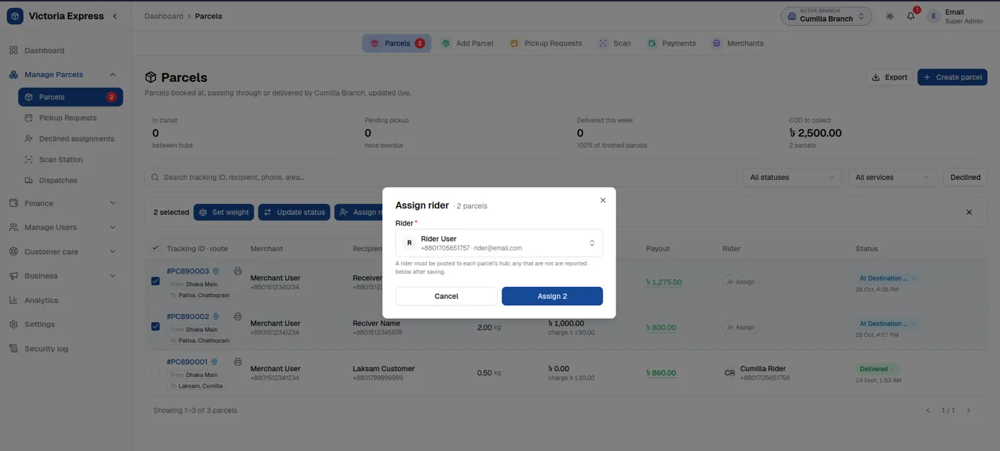

Fig. 2 — Victoria Express. Amber boxes: built by me. One API, three clients.
Victoria Express
Courier & logistics platform
A delivery business that runs on this system daily: merchants book parcels from one Flutter app, riders pick up and track from another, and the operations team routes everything through a Next.js dashboard — all speaking to one Django API with Celery workers handling dispatch and notifications.
Built: all four amber boxes — both mobile apps, the dashboard, and the API. Spec: DRF, PostgreSQL, Celery, Redis, push notifications.

Pickup request → rider assignment → hub transfer → delivery, across all three apps. Click to enlarge.









Real screens from the merchant app, rider app and admin panel — scroll, click to enlarge.